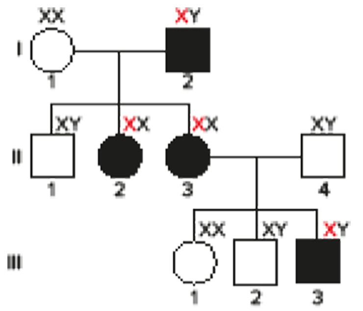
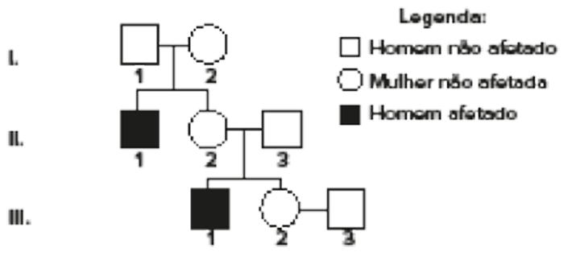

Representação artística do DNA, molécula que contém os genes
À medida que formos fazendo experimentos com passagens de nosso texto genético, poderemos talvez descobrir que certas seleções [...] dão melhores resultados do que outras [...]. Um casal do futuro talvez deseje que seu filho tenha duas cópias de um gene
associado ao talento musical, mas que perca uma que aumente a suscetibilidade ao câncer causado pelo meio externo.
Robert Shapiro (1935-2011), químico estadunidense. In: BRODY, David Eliot; BRODY, Arnold R. As sete maiores descobertas científicas da história. São Paulo: Companhia de Bolso, 2007.
Desde que Robert Shapiro escreveu esse trecho em seu livro The human blueprint, em 1991, até os dias atuais, inúmeras descobertas foram feitas e permitiram que, cada vez mais, pudéssemos compreender e desvendar os mistérios por
trás da Genética. Passamos a ser capazes de transformar várias incertezas em fatos consumados que agora buscamos tornar acessíveis e aplicáveis nos mais diversos âmbitos da nossa sociedade. O aumento do fluxo de informações
que temos vivenciado nas últimas décadas parece funcionar como o combustível que nos move a procurar saber ainda mais, até que chegamos ao ponto de situações antes inimagináveis serem agora uma realidade. Junto a isso, vêm
inúmeras questões éticas levantadas a cada novo experimento. Seguimos por caminhos nunca percorridos e precisamos de uma boa dose de cautela para analisarmos riscos, impactos e benefícios que nossos próximos passos podem
desencadear.
Quais descobertas foram de fundamental importância para o desenvolvimento da Genética?
Como pode ser representada cada característica genética ao longo das gerações?
Como o ambiente pode influenciar a determinação das características dos organismos?
Neste capítulo serão abordadas as habilidades
EM13CNT205
e
EM13CNT304
.
Aspectos históricos da genética
É antigo o interesse do ser humano pelo modo como as características são passadas de geração em geração. No século V a.C., o filósofo grego Hipócrates (460 a.C.-370 a.C.), considerado o “pai da Medicina”, propôs inicialmente
que, por todo o corpo, inúmeras partículas seriam produzidas contendo as características do indivíduo e, por meio da corrente sanguínea, elas seriam enviadas ao sêmen e, então, transmitidas à descendência no momento
da concepção. A hipótese de Hipócrates é conhecida como pangênese (do grego pan e genesis, que significam, respectivamente, “todo” e “origem”, “nascimento”). Mais tarde, ainda na busca pela compreensão da hereditariedade
e das variações surgidas ao longo das gerações, a ideia da pangênese foi retomada por Charles Darwin (1809-1882), que, em 1868, nomeou tais partículas como gêmulas e lhes conferiu a responsabilidade de originar novos
organismos, além de considerar que elas eram transportadas pelos gametas masculino e feminino até o momento da fecundação.
Teoria da pré-formação
Ainda na Antiguidade, Aristóteles (384 a.C.-322 a.C.) apresentou, em seu livro Geração dos animais, um contraponto à hipótese da pangênese de Hipócrates. Ele questionava: como características não estruturais (voz ou jeito
de andar, por exemplo) produziriam partículas para sua transmissão; como era possível indivíduos mutilados gerarem descendentes com a presença da estrutura amputada no genitor; e como características de ancestrais remotos
apareciam em crianças de dada família. Nessa época, o conhecimento sobre as células e sobre os gametas feminino e masculino era inexistente e a capacidade de gerar novos indivíduos era conferida ao sêmen, sendo
a fêmea responsável por atuar apenas como uma incubadora, fornecendo os nutrientes necessários para o desenvolvimento do indivíduo. Foi somente em meados do século XVII que os gametas feminino e masculino foram
descobertos por Regnier de Graaf (1641-1673) e Anton van Leeuwenhoek (1632-1723), respectivamente. Em 1675, quando van Leeuwenhoek descreveu os numerosos “seres” dotados de cabeça e cauda, com capacidade de movimentação,
ele considerou serem verdadeiros “animais” no sêmen e, por isso, denominou-os animáculos, que hoje conhecemos como espermatozoides. A ideia de que os organismos já estavam completamente formados mesmo antes da
concepção perdurou até meados do século XVIII e, com a descoberta dos gametas, muitos pesquisadores, como Nicolaas Hartsoeker (1656-1725), passaram a investigar se o indivíduo pré-formado estaria presente no interior
do óvulo ou do espermatozoide. Muitos cientistas acreditavam que, dentro dessas células, haveria um indivíduo adulto em miniatura.
Teoria da epigênese, ou teoria da pós-formação
A ideia da epigênese (do grego epi e genesis, que significam, respectivamente, “depois” e “origem”, “nascimento”) foi inicialmente apresentada por Aristóteles a partir dos seus estudos sobre o ovo e o desenvolvimento embrionário
da galinha. Contudo, a teoria da epigênese foi formalizada apenas em 1759, em oposição à teoria da pré-formação, e, segundo ela, o embrião se desenvolve a partir de matéria indiferenciada que passa a apresentar forma
organizada e funções vitais. Anos mais tarde, em meados da década de 1820, novos estudos sobre desenvolvimento embrionário contribuíram para o fortalecimento da teoria. Um dos trabalhos de grande destaque foi o
de Karl Ernest von Baer (1792-1876) sobre o desenvolvimento embrionário de cães e gatos. Além de descrever os óvulos, Von Baer também forneceu detalhes sobre as fases do desenvolvimento embrionário, isto é, a ontogenia.
... durante a Idade Média, os interesses pelos assuntos científicos foram praticamente cessados no mundo ocidental por conta da hegemonia exercida pela Igreja sobre o pensamento humano. Foi somente com o Renascimento, ou Renascença, que o interesse pela
experimentação e observação retornou. O Renascimento foi um movimento literário, artístico e científico que surgiu na Itália por volta do século XV e perdurou até o século XVI. É caracterizado, principalmente,
pela valorização da razão e da natureza, assim como da cultura greco-romana, e pelo antropocentrismo.
No século XIX, o estudo do desenvolvimento era tido quase como sinônimo de embriologia e a maioria dos trabalhos sobre o assunto o relacionava à evolução biológica, assumindo a visão de que ela era movida, basicamente, por mudanças durante o desenvolvimento.
Lei da herança ancestral
Depois de publicada A origem das espécies, de Charles Darwin, críticas severas foram pontuadas diante da implicação de que os seres humanos obedeceriam, em termos biológicos, aos mesmos princípios impostos a outros animais
e às plantas. No final do século XIX, superadas as resistências à teoria da seleção natural, a atenção se voltou a compreender a transmissão de características dos genitores à sua prole. Francis Galton (1822-1911),
matemático e médico, debruçou-se em experimentos sobre mecanismos de herança, partindo do princípio da pangênese defendido por Darwin, que era seu primo. Segundo a lei da herança ancestral, postulada por Galton em 1897,
métodos matemáticos e estatísticos revelariam padrões sobre a hereditariedade das características. Ao estabelecer as proporções de uma característica que um descendente receberia de seus pais, de seus avós, de seus
bisavós e, assim por diante, Galton não fez referência à existência do que hoje conhecemos como genes.
Teoria cromossômica da herança
O estabelecimento da teoria mais atual sobre os fatores responsáveis pela herança dependeu do desenvolvimento da citogenética e dos experimentos realizados por Gregor Mendel (1822-1884), cujos resultados foram publicados
em 1866. O trabalho de Mendel, que será apresentado com mais detalhes nos próximos capítulos, manteve-se esquecido até 1900, quando foi redescoberto por dois pesquisadores independentes: o alemão Carl Correns (1864-1933)
e o holandês Hugo de Vries (1848-1935). Durante o período de esquecimento dos postulados mendelianos, o campo da citologia expandiu significativamente, e foram observadas inúmeras estruturas ao microscópio, tais
como os cromossomos, além de terem sido descritos os processos de divisão celular, tanto a mitose quanto a meiose. Assim, pesquisas independentes puderam obter as mesmas conclusões, de que a transmissão de características
se daria por fatores presentes nos gametas. Essa é a mesma conclusão que Mendel tivera muitos anos antes de tais conceitos e estruturas estarem bem estabelecidos. O avanço da Genética, então, ocorreu quando finalmente
se comprovou que os fatores mendelianos, hoje chamados de genes, compõem as estruturas cromossômicas. Esse conceito ficou, então, conhecido como teoria cromossômica da herança. Em 1906, foi estabelecido o termo “genética”
pelo biólogo inglês William Bateson (1861-1926); e, em 1909, o botânico dinamarquês Wilhelm Johannsen (1857-1927) criou o termo “gene”, além de “genótipo” e “fenótipo”, que serão definidos ainda neste capítulo.
Conceitos de Genética
Para compreendermos a Genética, é importante retomar alguns conceitos já trabalhados, tais como a natureza química do DNA e alguns princípios da meiose.
DNA
O ácido desoxirribonucleico (DNA) é encontrado em todos os tipos celulares e, no caso das células eucarióticas, pode ser encontrado dentro do núcleo e em organelas como mitocôndrias e cloroplastos. O número de moléculas
de DNA, no núcleo celular, é diferente para cada espécie, porém, em todos os casos, a molécula é composta de uma dupla fita que se organiza em formato de hélice em consequência da interação entre os nucleotídeos, unidades
que formam essa macromolécula. Além de um grupamento fosfato e uma pentose, os nucleotídeos que formam o DNA também apresentam quatro variedades de bases nitrogenadas: a adenina (A), a timina (T), a guanina (G) e a
citosina (C). A sequência de nucleotídeos é o que possibilita ao DNA armazenar informações. Dentro do núcleo, as moléculas de DNA assumem a forma organizada de cromatina e, em períodos específicos do ciclo celular,
elas se duplicam e assumem o formato, ainda mais compactado, conhecido como cromossomo, o qual iremos tomar como referência para retomarmos alguns outros conceitos. Em células somáticas de animais, os cromossomos
podem ser agrupados em pares devido à presença de características morfológicas semelhantes (tamanho, formato e posição do centrômero) e, nesse caso, são conhecidos como cromossomos homólogos. Além dessas semelhanças,
os cromossomos homólogos também contam com os mesmos genes ocupando as mesmas regiões específicas, conhecidas como loco gênico (do latim locus, que significa “lugar”, “localização”). Cada gene pode apresentar variações,
chamadas de alelos, que podem ser originados a partir de mutações. Por exemplo, o gene que determina a cor da pelagem de coelhos pode manifestar a coloração amarela ou preta.
BROOKER, R. J. Concepts of Genetics. Nova York: McGraw-Hill, 2012. Representação esquemática dos genes e alelos em cromossomos homólogos.
Meiose
Durante a formação de gametas por meiose, em certo momento os cromossomos homólogos ficam pareados, isto é, aproximados, o que possibilita a ocorrência do crossing-over, ou permutação. Posteriormente, em decorrência do encurtamento
das fibras do fuso, os cromossomos homólogos migram para polos opostos da célula e, após a citocinese, há redução da ploidia da célula, caracterizando a meiose. Nesse processo, os fenômenos de crossing-over e a separação
dos cromossomos homólogos ocorrem de maneira aleatória, criando inúmeras combinações de alelos nos gametas.
Fenótipo e genótipo
As particularidades dos indivíduos, isto é, suas características, desde as primeiras investigações que culminaram na criação da Genética, têm sido estudadas. Devido às descobertas feitas por Mendel, as quais serão apresentadas
no próximo capítulo, pode-se então atribuir a determinação de caraterísticas a fatores, hoje conhecidos como genes. O conjunto de características estruturais ou funcionais recebe o nome de fenótipo (do grego phainen, que
significa “fazer aparecer”). Por exemplo, a cor dos olhos no ser humano é uma característica fenotípica, e as pessoas podem ter olhos castanhos, verdes ou azuis. A determinação dessas características depende, por sua vez, do
conjunto de genes do indivíduo, chamado de genótipo (do grego gen e typos, que significam, respectivamente, “gerar” e “tipo”, “modelo”). A determinação do fenótipo não se dá pela ação exclusiva do genótipo. Ela depende
da interação entre o genótipo e o ambiente, e fenômenos moleculares também têm efeitos sobre a determinação do fenótipo. Esses fenômenos moleculares podem, por exemplo, estar relacionados à produção de proteínas por um gene
ou à interação entre dois alelos do mesmo loco. Sendo assim, um mesmo genótipo pode ser responsável por um conjunto variado de fenótipos quando em ambientes diferentes. Algumas influências do ambiente na expressão do genótipo
são conhecidas como normas de reação, que podem ser exemplificadas pelo que ocorre com a cor do pelo de coelhos em relação à temperatura: após raspar uma porção do pelo do coelho de pelagem branca e submeter a região a aplicações
periódicas de bolsas de gelo, nota-se que, após certo tempo, os novos pelos nascem pretos.
Representação esquemática de um experimento realizado para comprovação da influência do ambiente na determinação do fenótipo de um coelho.
Representação dos cromossomos em condição de homozigose ou de heterozigose para determinado gene.
Quando o ambiente ocasiona alterações no fenótipo do indivíduo de modo a copiar uma característica que, geralmente, é determinada geneticamente em outros indivíduos, classifica-se o fenótipo copiado como fenocópia. Em relação à determinação do genótipo, devemos nos lembrar dos princípios da meiose e da fecundação, para que então seja possível compreender que um indivíduo diploide apresenta dois alelos de um gene: um proveniente
da mãe e o outro, do pai. Esses alelos podem ou não ser idênticos em um mesmo indivíduo, assim condicionando a homozigose ou a heterozigose, respectivamente, para determinado gene. Os indivíduos homozigotos também são
chamados de puros, enquanto os heterozigotos são conhecidos como híbridos.
Discussão em sala
Epigenética
Estudos recentes têm demonstrado que variações não genéticas resultantes de experiências individuais durante a vida de um organismo podem ser, frequentemente, transmitidas aos descendentes. Tal fenômeno é conhecido como
herança epigenética (do grego epi, que significa “acima”) e sua ocorrência depende de pequenas alterações químicas na própria molécula de DNA e nas proteínas associadas a ela. Com o apoio do material oferecido
no boxe “Mais”, trace, junto de seus colegas, potenciais benefícios à qualidade de vida em nossa sociedade resultantes da melhor compreensão sobre a epigenética.
Mais
Epigenética: a estranha herança através da memória celular, Minuto da Terra.
O vídeo traz uma explicação simples sobre os experimentos que levaram ao desenvolvimento da epigenética. Disponível em: (http://p.p4ed.com/RMMOZ).
Quadro de Punnett
Após a meiose, uma célula diploide forma gametas haploides. Com a fecundação, ocorre o encontro entre dois gametas e a formação de uma nova célula diploide. Para visualizar facilmente as combinações possíveis de gametas
e os genótipos resultantes, pode-se usar o quadro de Punnett, proposto pelo geneticista inglês Reginald C. Punnett (1875-1967). No topo e na lateral esquerda do quadro são colocados os tipos de gametas do cruzamento.
No centro do quadro, colocam-se as combinações formadas.
A. Célula heterozigota para o gene A, ou seja, com genótipo Aa, e os gametas formados após a meiose; B. Utilização do quadro de Punnett para analisar o cruzamento de dois indivíduos Aa.
Dominância e recessividade
Em alguns casos, o alelo somente se manifesta quando se encontra em homozigose, ou seja, são necessárias duas cópias do alelo; nesse caso, ele é chamado de alelo recessivo. Já quando um alelo se manifesta tanto em homozigose
quanto em heterozigose – ou seja, basta uma cópia do alelo para ele se manifestar –, ele é conhecido como alelo dominante. Não se pode assumir, porém, que, por dado alelo ser dominante, ele seja melhor ou mais
comum do que o alelo recessivo. Muitas doenças genéticas graves são determinadas pela presença de alelos dominantes, enquanto a condição sadia é definida por alelos recessivos. A representação das condições dominante
ou recessiva dos alelos pode ser feita de várias maneiras, a mais comum é o uso de letra maiúscula e minúscula para a designação de alelo dominante e recessivo, respectivamente. Em uma representação de genótipo, a letra
maiúscula sempre deve ser representada antes da minúscula. Por exemplo, um gene A que tenha os alelos “A” e “a” possibilita três genótipos: AA, Aa e aa.
Tipos de herança: autossômica ou ligada ao sexo
Sabemos que os cromossomos podem ser classificados como autossômicos ou sexuais, sendo esses últimos responsáveis pela determinação do sexo biológico (feminino ou masculino) do indivíduo. Assim, os genes presentes, nesses
tipos de cromossomo, são também diferenciados quanto à forma de herança. As características que são determinadas por genes dispostos em cromossomos autossômicos respeitam a herança conhecida como herança autossômica
e que, portanto, não estão relacionadas ao sexo do indivíduo. Esse tipo de herança será abordado neste e nos próximos capítulos. Já a herança das características determinadas por genes encontrados em cromossomos sexuais
(X ou Y) é dita herança ligada ao sexo, abordada com maior aprofundamento no capítulo 7.
Nos heredogramas, é comum que as gerações sejam representadas por algarismos romanos à esquerda do diagrama e que os indivíduos sejam indicados por algarismos arábicos abaixo de cada símbolo. A numeração dos descendentes
de um casal também aponta a ordem do nascimento de cada filho, sendo o primeiro, normalmente, colocado à esquerda. Vamos praticar essas regras de construção de heredogramas partindo do seguinte exemplo: • Um casal
com visão em cores normal teve quatro filhos: três mulheres e um homem, todos com visão normal, nessa ordem de nascimento. • A primeira filha casa-se com um homem com visão normal e tem quatro crianças, todas com
visão normal, sendo duas mulheres, um homem e uma mulher, nessa ordem.
Genealogia é um termo constantemente utilizado como sinônimo de heredograma, contudo é etimologicamente distinto, pois faz referência à série de antepassados ou ao conjunto de descendentes
de dado indivíduo, exaltando aspectos históricos.
Heredograma que representa caso de herança autossômica dominante.
Mais
Genômica mostra influência do sexo dos reprodutores na maciez da carne bovina, de Ana Maio, Agência de Notícias Embrapa. O artigo mostra a importância, para a agropecuária, do reconhecimento dos padrões de herança.
Disponível em: (https://www.embrapa.br/busca-denoticias/-/noticia/47967486/ genomica-mostra-influencia-dosexo-dos-reprodutores-na-maciezda-carne-bovina).
• A segunda filha casa-se com um homem com visão normal e também tem quatro crianças, na seguinte ordem: uma menina com visão normal, um menino daltônico, um menino com visão normal e o último menino daltônico. Os demais
filhos do casal da geração I ainda não têm descendentes.
As informações fornecidas por heredogramas nos permitem, muitas vezes, determinar o padrão de herança de uma característica, que depende da interação entre a localização cromossômica do gene e a forma de interação gênica.
A seguir, iremos avaliar a manifestação de características em quatro diferentes padrões de herança.
Herança autossômica dominante
Determinada característica respeita o padrão de herança autossômica dominante quando ela se manifesta nos dois sexos na mesma proporção e quando todo indivíduo afetado possui pelo menos um genitor afetado. Veja o heredograma
ao lado. Os indivíduos representados por símbolos preenchidos manifestam a característica, enquanto os demais não. Note que a característica ocorre em todas as gerações anteriores à de um indivíduo afetado.
Herança autossômica recessiva
Nesse tipo de herança, para que a característica estudada se manifeste, é necessário que o alelo recessivo se apresente em homozigose. Características com padrão de herança autossômica recessiva se manifestam nos dois sexos
na mesma proporção e é comum que os genitores de um indivíduo afetado não sejam afetados. Isso ocorre quando ambos os genitores são heterozigotos, ou seja, possuem apenas um alelo recessivo.
Heredograma que representa caso de herança autossômica recessiva.
No exemplo acima, a característica analisada é determinada em recessividade. Ao analisarmos os indivíduos afetados III.2, II.5 e II.6, notamos que nenhum dos genitores é afetado. É possível, inclusive, que se passem muitas
gerações até que a característica volte a se manifestar. Nesse tipo de herança, casamentos consanguíneos tendem a favorecer o reaparecimento do fenótipo recessivo desde que os genitores sejam ambos portadores do
alelo determinante da característica analisada.
Herança dominante ligada ao X
Esse tipo de herança ocorre com genes localizados no cromossomo sexual X e basta uma cópia do alelo dominante para que a característica se manifeste.

Nesse heredograma, a letra em vermelho indica o alelo dominante.
Em heranças dominantes ligadas ao X, indivíduos do sexo masculino (XY) que portem o alelo dominante manifestarão a característica e, necessariamente, transmitirão esse cromossomo X para todos os seus descendentes do sexo feminino:
todas as filhas de um pai afetado serão afetadas. Todo indivíduo afetado tem pelo menos um dos genitores afetado.
Herança recessiva ligada ao X
Em se tratando de heranças recessivas ligadas ao X, para que a característica seja manifestada em indivíduos do sexo feminino, é necessária a presença do alelo recessivo nos dois cromossomos X. Nos indivíduos do sexo masculino,
a presença de apenas um alelo recessivo já é suficiente para que a característica esteja presente em seu fenótipo.
Nesse heredograma, a letra em vermelho indica o alelo recessivo.
Nesse tipo de herança, notamos que: todos descendentes do sexo masculino gerados por uma genitora afetada pela condição apresentarão o mesmo fenótipo que ela; e um pai não afetado pela característica nunca terá uma filha afetada,
a não ser que ocorra uma mutação no gene ou a genitora também seja afetada pela condição. É possível que um indivíduo afetado não tenha nenhum de seus genitores afetado, como é o caso do indivíduo III.1.
Noções de probabilidade
O conhecimento de Matemática e Estatística foi fundamental para a progressão dos conhecimentos em Genética, e veremos, no próximo capítulo, como Mendel aplicou os princípios da probabilidade em seus experimentos com ervilhas. Em geral, o uso da probabilidade se destina a possibilitar a previsão de resultados a partir de um número grande de repetições de eventos que ocorrem ao acaso. Exemplos comuns utilizados para explicar esses princípios
são os lançamentos de dados ou moedas. Matematicamente, a probabilidade pode ser definida por:
Por exemplo, se quisermos calcular a probabilidade de se obter o número 3 ao jogar um dado de seis lados, procedemos da seguinte forma: • A quantidade de eventos desejados é 1, pois apenas o número 3 interessa. • A quantidade
de eventos possíveis é 6, pois o dado tem seis lados, cada um com um número de 1 a 6. • Logo, a probabilidade de obter o número 3 é 1/6. Para facilitar os cálculos em Genética, deve-se, ainda, compreender duas regras
simples da probabilidade: a regra da multiplicação (do produto ou do “e”) e a regra da adição (da soma ou do “ou”).
Regra da multiplicação
No lançamento de duas moedas, qual a probabilidade de que o resultado seja coroa nos dois casos? Para chegarmos à resposta dessa situação, devemos, inicialmente, considerar a probabilidade de que, ao cair a moeda, a face coroa
esteja voltada para cima. Para isso, sabemos que o objeto apresenta duas faces, uma cara e outra coroa, portanto há um total de 2 eventos possíveis, sendo que o evento desejado – a coroa – é um deles. Assim, a probabilidade
de que a face coroa saia ao jogar uma moeda é de 1/2, ou seja, 50%. Para calcular a probabilidade de se obterem duas coroas, multiplicam-se as probabilidades individuais: 1/2 × 1/2 = 1/4. É importante notar que
o resultado da segunda moeda é independente do resultado da primeira moeda. Dessa forma, a regra da multiplicação deve ser aplicada sempre que se quiser saber a probabilidade de ocorrer uma combinação de dois ou mais eventos
independentes: a chance de ocorrer um evento e também outro evento. Para isso, multiplicam-se as probabilidades isoladas dos eventos desejados. Um exemplo relacionado à Genética: considere um casal cuja esposa está grávida
de um par de gêmeos bivitelinos (originados a partir de duas fecundações). Qual a probabilidade de que as duas crianças sejam do sexo masculino? Para resolvermos esse problema, devemos considerar que a mãe somente produz óvulos
com cromossomo X, enquanto o pai produz metade dos gametas portando o cromossomo X e a outra metade portando o cromossomo Y. Considerando que a taxa de fecundação é igual para os dois tipos de espermatozoide, a chance de uma
fecundação resultar em uma criança do sexo masculino é 50%, ou 0,5. Sendo assim, a probabilidade de que as duas fecundações independentes resultem em crianças do sexo masculino é 0,5 × 0,5 = 0,25, ou 25%.
Questão resolvida
1
Fuvest-SP 2016 No heredograma a seguir, a menina II1 tem uma doença determinada pela homozigose quanto a um alelo mutante de gene localizado num autossomo. A probabilidade de que seu irmão II2, clinicamente normal,
possua esse alelo mutante é
0
1/4
1/3
1/2
2/3
Resolução:
Alternativa: E Pelo heredograma, é possível determinar que a doença apresenta herança recessiva, já que nenhum dos genitores é afetado. Logo, a menina é aa e os genitores são Aa.
Como o indivíduo II2 não é afetado, seu genótipo pode ser AA ou Aa. Montando um quadro de Punnett, vemos que há dois eventos desejados (Aa) em meio a três eventos possíveis (um AA e dois Aa). Assim, a probabilidade de o irmão II2
ser portador de um alelo mutante é 2/3.
Regra da adição
Imagine o lançamento de um dado: qual é a probabilidade de sair o número 3 ou o número 5? Lembre-se de que, em um dado, existem seis possibilidades de resultados e somente, em uma face dele, é encontrado o número 3. Portanto,
a probabilidade de que a face 3 apareça como resultado do lançamento é de 1/6. Essa é a mesma probabilidade de o resultado ser a face 5. Há, portanto, 2 eventos desejados, entre 6 eventos possíveis, e, então, a probabilidade
de que a condição do enunciado ocorra é de 2/6 = 1/3. Esse valor também pode ser obtido pela soma das probabilidades de cada evento desejado: 1/6 + 1/6 = 2/6. Em suma, a regra da adição pode ser formulada da seguinte forma:
a probabilidade de ocorrência de dois eventos simultaneamente excludentes é igual à soma das probabilidades de cada um deles ocorrer isoladamente. Retomando o exemplo anterior, dos gêmeos bivitelinos: qual é a probabilidade
de pelo menos uma das crianças ser do sexo feminino?
Combinações possíveis do sexo das crianças.
Uma vez que a situação 1, demonstrada na ilustração anterior, não se enquadra na condição exigida pelo enunciado (“pelo menos uma das crianças ser do sexo feminino”), ela deve ser descartada. Restam, portanto, três situações desejadas,
em meio a quatro situações possíveis, ou seja, a probabilidade é 3/4, ou 75%. A probabilidade de a situação 2 acontecer, aplicando a regra da multiplicação, é de 1/2 × 1/2 = 1/4. É a mesma probabilidade de ocorrer a situação
3 e de ocorrer a situação 4. Essas três situações não podem ocorrer de maneira simultânea e são, portanto, mutuamente excludentes. Assim, para calcular a probabilidade de que o par de gêmeos tenha pelo menos uma criança do
sexo feminino, podem-se somar as probabilidades de ocorrência dos eventos independentes, isto é, 1/4 + 1/4 + 1/4 = 3/4. Em conclusão, percebe-se que os lançamentos de dados e moedas têm muito em comum com os eventos da
fecundação.
Aplicando conhecimentos
1
O que é genótipo?
2
O que é fenótipo?
3
O que são genótipos homozigotos e heterozigotos, para determinado gene?
4
Qual a diferença entre os alelos dominantes e os recessivos?
5
Complete as lacunas a seguir, indicando se as alterações mencionadas ocorreram no fenótipo ou no genótipo,
Uma mulher, de cabelos naturalmente loiros, ao pintá-los de castanho altera seu _____________.
Uma pessoa, que ficou exposta à radiação e sofreu uma mutação em um gene específico, teve seu _______________________ alterado.
Um surfista com a pele branca, que fica exposto ao sol e acaba ficando bronzeado, apresentou mudança no seu _____________________.
6
A cor vermelha de uma flor é determinada pelo alelo B e predomina sobre a cor branca, a qual é determinada pelo alelo b. No cruzamento entre duas flores vermelhas heterozigotas, indique as proporções genotípica e fenotípica
que podem ser formadas.
7
“As anomalias genéticas sempre são causadas por alelos recessivos.” Essa frase está correta? Justifique.
CONSOLIDANDO SABERES
1
Uece 2019 A probabilidade de um casal ter dois filhos do sexo masculino e a probabilidade de esse mesmo casal ter dois filhos, sendo uma menina e um menino são respectivamente
1/4 e 1/4.
1/2 e 1/2.
1/2 e 1/4.
1/4 e 1/2.
2
Uece 2019 Um dos conceitos utilizados para a compreensão de genética diz que a propriedade de um alelo de produzir o mesmo fenótipo tanto em condição homozigótica quanto em condição heterozigótica é causada por um gene
homozigoto.
dominante.
recessivo.
autossomo.
3
Unesp 2019 Um homem de genótipo AaBb em arranjo cis teve um filho com uma mulher duplo-homozigótica dominante para esses genes autossômicos. O gene A está distante 8 unidades de recombinação (UR) de B. Há menor probabilidade
de o genótipo dessa criança ser
AaBB ou AaBb.
AABB ou AABb.
AABB ou AaBB.
AABb ou AaBb.
AABb ou AaBB.
4
Famerp -SP Analise o heredograma, no qual os indivíduos afetados por uma característica genética estão indicados pelos símbolos escuros.
Considerando que tal característica é condicionada por apenas um par de alelos autossômicos, é correto afirmar que
os indivíduos 2, 3 e 8 apresentam genótipo dominante.
os indivíduos 1, 4, 7, 12 e 13 apresentam genótipo recessivo.
nenhum dos indivíduos do heredograma apresenta genótipo recessivo.
nenhum dos indivíduos do heredograma apresenta genótipo homozigoto dominante.
trata-se de uma característica homozigota e dominante.
5
FICSAE-SP 2019 Acromatopsia é uma doença autossômica recessiva rara determinada por um par de alelos. Pessoas com essa doença pouco distinguem cores ou não as distinguem, podendo enxergar uma só cor. No heredograma, o avô de
Renan e Bárbara apresenta a acromatopsia.
A probabilidade de Renan e Bárbara gerarem um menino com a acromatopsia será de
1/16.
1/8.
1/32.
1/64.
1/4.
6
UPF -RS 2017 A doença de Tay-Sachs é um distúrbio neurológico degenerativo, autossômico recessivo, causada pela disfunção dos lisossomos. O heredograma de três gerações da família Silva, apresentado abaixo, mostra indivíduos
com essa doença.
Com base no heredograma, é correto afirmar que os indivíduos
1 e 2 são homozigóticos dominante, caso contrário, seriam doentes.
3 e 5 são necessariamente heterozigóticos para essa doença.
2 e 6 são homozigóticos para essa doença.
5 e 6 são heterozigóticos, caso contrário, não teriam filho doente.
2 e 4 são heterozigóticos para essa doença.
7
FICSAE 2017 A fenilcetonúria, também conhecida como PKU, é uma doença genética humana caracterizada pela incapacidade de metabolizar o aminoácido fenilalanina. Como consequência, há acúmulo de fenilalanina no organismo, o que
interfere negativamente no desenvolvimento cerebral e provoca deficiência intelectual. É um tipo de distúrbio que afeta crianças de ambos os sexos, que, na maioria das vezes, nascem de pais normais. O diagnóstico, quando
realizado precocemente pelo teste do pezinho, é útil para se estabelecer uma dieta planejada que previne a deficiência intelectual. Considerando essas informações, pode-se inferir que os fenilcetonúricos
são heterozigotos e devem seguir uma dieta com algumas restrições lipídicas.
são homozigotos e devem seguir uma dieta com algumas restrições proteicas.
podem ser heterozigotos ou homozigotos e sua dieta deve ser rica em proteínas.
podem ser heterozigotos ou homozigotos e devem evitar proteínas e lipídios.
8
Fuvest-SP 2019 Uma alteração genética é determinada por um gene com herança autossômica recessiva. O heredograma mostra famílias em que essa condição está presente.
O casal III2 e III3 está esperando um menino. Considerando que, nessa população, uma em cada 50 pessoas é heterozigótica para essa alteração, a probabilidade de que esse menino seja afetado é
1/100
1/200
1/1.000
1/25.000
1/40.000
9
Fuvest 2020 Analise a seguinte genealogia de uma doença:
Foi levantada a hipótese de que a doença possui padrão de herança dominante ligada ao cromossomo X. O que levou a tal conclusão foi a
incidência da doença em mulheres e homens.
transmissão do alelo mutante apenas às filhas de um homem afetado.
presença de pessoas afetadas em todas as gerações.
transmissão do alelo mutante às filhas e aos filhos de uma mulher afetada.
presença de pelo menos um dos genitores afetados.
10
OBB O hormônio leptina é produzido pelo tecido adiposo, e atua na regulação da sensação de fome e saciedade. Deficiências na produção desse hormônio estão associadas ao desenvolvimento de obesidade, que é o acúmulo de gordura
acima de 20% a massa do corpo. A deficiência na produção de leptina ocorre quando o indivíduo é homozigoto recessivo (indivíduos homozigotos dominantes ou heterozigotos produzem quantidades suficientes de leptina) para
o gene que condiciona a produção deste hormônio. Considere um casal, ambos com produção normal de leptina (assim como os pais do rapaz e os pais da moça), porém o irmão do rapaz e a irmã mais nova da moça são obesos por
deficiência de leptina. Qual a probabilidade de, ao terem duas crianças, uma ser obesa por deficiência de leptina?
3/8
1/6
3/16
1/12
1/16
11
Uece 2019 Leia atentamente o seguinte excerto: “Numa pesquisa de opinião, divulgada em janeiro, pela revista Time, 49% dos entrevistados responderam que não se submeteriam a um teste genético para saber quais as doenças que
provavelmente viriam a se manifestar no futuro, enquanto 50% responderam que sim”.
Fonte: http://dx.doi.org/10.1590/0104-4060.138
Sobre as doenças congênitas e hereditárias, é correto afirmar que
doença congênita é caracterizada por transmitir- -se de geração em geração, isto é, de pais a filhos. As principais são diabetes, hemofilia, hipertensão e obesidade.
doença hereditária é adquirida antes do nascimento ou até o primeiro mês de vida, seja qual for a causa. O teste do pezinho pode detectar esses tipos de doenças.
doença hereditária é resultante de doenças transmitidas por genes, e pode se manifestar desde o nascimento ou surgir posteriormente.
nem toda doença hereditária é congênita, mas todas as doenças congênitas são hereditárias.
12
Fuvest-SP-2021 A genealogia a seguir representa uma família em que aparecem pessoas afetadas por adrenoleucodistrofia. A mulher III.2 está grávida e ainda não sabe o sexo do bebê.

A relação correta entre o padrão de herança desta forma de adrenoleucodistrofia e a probabilidade de que a criança seja afetada é:
SUPERAÇÃO
1
Unicamp-SP A anemia falciforme é uma doença genética autossômica recessiva, caracterizada pela presença de hemácias em forma de foice e deficiência no transporte de gases. O alelo responsável por essa condição é o HbS, que
codifica a forma S da globina b. Sabe-se que os indivíduos heterozigotos para a HbS não têm os sintomas da anemia falciforme e apresentam uma chance 76% maior de sobreviver à malária do que os indivíduos homozigotos para
o alelo normal da globina b (alelo HbA). Algumas regiões da África apresentam alta prevalência de malária e acredita-se que essa condição tenha influenciado a frequência do alelo HbS nessas áreas.
O que ocorre com a frequência do alelo HbS nas áreas com alta incidência de malária? Por quê?
O heredograma abaixo se refere a uma família com um caso de anemia falciforme. Qual é a probabilidade de o casal em questão ter outro(a) filho(a) com anemia falciforme? Explique.